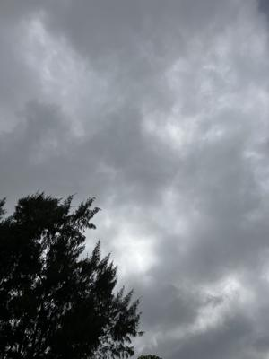
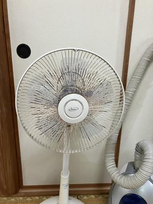
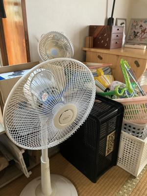

うるがいの話 ある日
最新: 扇風機【うるがいの話 ある日】とは 一日だけのプログです
『うるがいの話』の最新一日だけのプログで、通信料が少なく経済的だ。カニの画像をクリックすると全ての日付が載る『うるがいの話』サイトを表示します
|
|
【うるがいの話】 うるがい(ｳﾙｶﾞｲ urugai)とは、『もずくがに』の名前でとても大きくなります。 |
|---|---|
|
|
【カミマヤーの話】 猫のことを方言でマヤーといいます。カミマヤー（kamimayaa）とは、神の猫のことです。 |
|
【たながぁの音楽】 たながぁ（ﾀﾅｶﾞｰ tanagaa）とは手長えびのことで、何種類かあり大きいのは車 エビぐらいになります。 |

|
【ぶながぁの話】 ぶながぁ(ﾌﾞﾅｶﾞｰ bunagaa)とは、赤い髪の毛、赤い身体、そして身長は１ｍ２０ｃｍ ぐらい、川の蟹を食べているの目撃された。場所は沖縄県国頭郡大宜味村のと ある村僕の隣近所に住んでいる爺さんから、聞いた話です。 |
|
|
【ギーマの話】 ギーマ(giima)とは、山原の里山に咲くスズランに似た、 花を付けます。実は食べられます、 気が付くと口の周りが紫になっています。 |
2025年05月14日 (水）扇風機
15:44

錆びているから誰ももらわないとヨメが言う。マンションには、扇
風機が二つあった。私の家から持ってきた新しい扇風機は、ヨメの
妹が欲しいというのであげた。コドモも新しいものは、欲しいけど
と言っていたが、古いものはいらないと言われた。

扇風機の羽ガードを、替えられるか調べたが古くて無い（２００６
年 パナソニック ナショナル 扇風機 Ｆ－ＣＢ３２２－ＷＡ）
あっても恐ろしく高い。家には、普通の扇風機は３つある。
その昔（２０１７年）、扇風機の展示が終了した時期に、暑くて扇
風機ありますかと、家電へいったら、これだけですと１万円を超え
た？もした卓上の扇風機（下の写真に写っている小型）を薦める。
ないよりましかと購入する。その後、子供がアパートで欲しいとい
うので、譲った。ところが、子供は、海外に行ったので出戻りに。
勿体無いので、置いてあるが。マ、そういうことで扇風機に思い入
れが、あるのです。田舎では、お隣の幼友達の手先が器用がお父さ
んが、錆びたのにペンキ塗りをしているところをよく見た。私もと
サンドペーパで錆を落とし、白い色のラッカースプレー（７４４円
アサヒペン アスペンラッカースプレー ３００ＭＬツヤ消し白）
で対応した。
錆を落とした翌日から、腰が痛いオジーだ。まだ、完治していない
。下はスプレーした後の扇風機、写真では新品のようだ。

扇風機の隣にある幾つかのカゴ、マンションのものである。さてど
う処分するか、・・・、コドモに使って貰うつもりである。